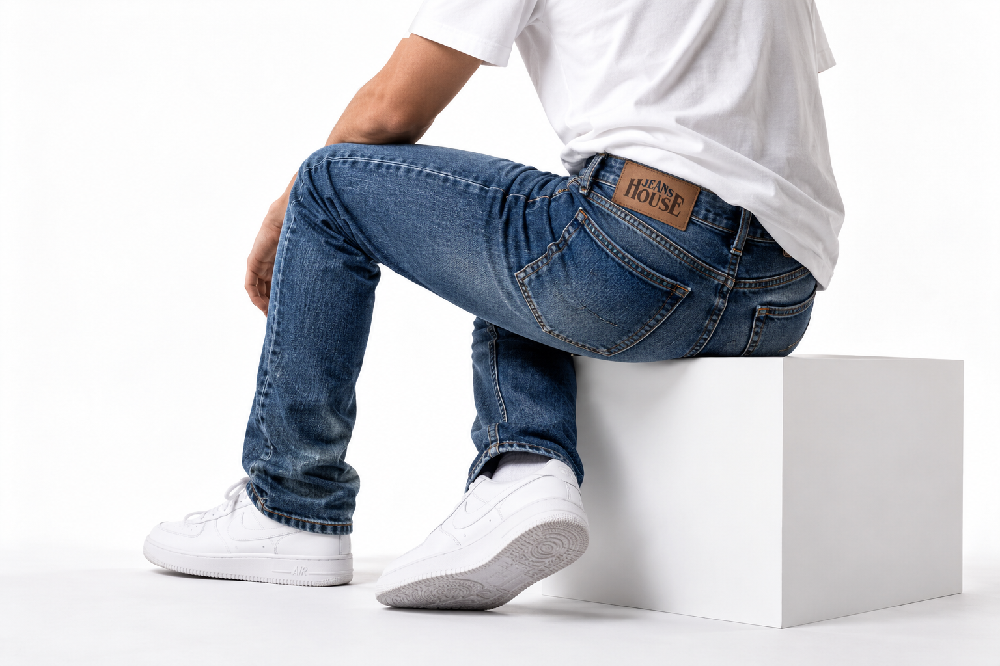

Passform zuerst.
Von slim bis relaxed, von klassisch bis modern – wir finden den Schnitt, der zu Ihrer Figur und Ihrem Alltag passt.
JEANS HOUSE · HAMBURG-WANDSBEK
Seit über 30 Jahren finden wir Jeans, die wirklich sitzen. Persönliche Beratung, große Auswahl und ehrliche Empfehlungen direkt in Wandsbek.

Wandsbeker Allee 68
22041 Hamburg Anfahrt ansehen →01 · WARUM JEANS HOUSE?
Die richtige Hose entscheidet sich nicht am Größenetikett. Wir sehen, welcher Schnitt zu Ihnen passt, vergleichen Modelle direkt vor Ort und finden gemeinsam die Jeans, die Sie gerne tragen.
So funktioniert unsere Beratung →Von slim bis relaxed, von klassisch bis modern – wir finden den Schnitt, der zu Ihrer Figur und Ihrem Alltag passt.
Bekannte Marken, unterschiedliche Waschungen und viele Größen direkt im Store statt endloses Bestellen und Zurückschicken.
Mehr als 30 Jahre Beratung helfen uns, schnell die Modelle auszuwählen, die wirklich Sinn ergeben.
02 · MARKEN & MODELLE
Unter anderem Levi's, Lee, Wrangler, MAC, Pioneer, Cross und Paddock's – plus weitere Labels und wechselnde Einzelstücke.
03 · WIR LIEBEN JEANS
Boyfriend, High Waist, Straight, Slim oder cropped: Jeans funktioniert über Trends hinweg und lässt sich immer neu kombinieren. Genau deshalb beschäftigen wir uns seit Jahrzehnten mit Schnitten, Größen und Passformen.